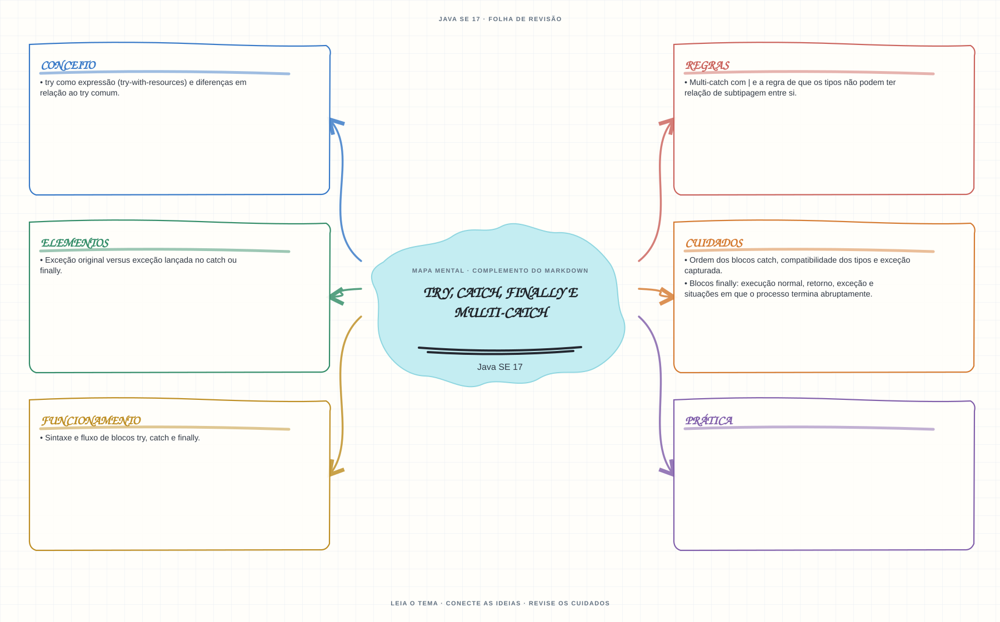

Ver mapa mental deste assuntoPrever o fluxo de captura, propagação e execução de finally sem ocultar a exceção original.
Primeiro contato: aprenda o conceito e pratique antes de consultar os detalhes de prova. Voltar aos fundamentos se algum termo ainda for novo.
- Leia o objetivo e localize a ideia principal no conteúdo abaixo.
- Preveja o resultado, compile e execute o exemplo.
- Faça a atividade sem copiar a solução e confira a checagem comentada.
EXEMPLO DE CONSOLE
Veja a regra em execução
Antes de executar, anote sua previsão. Compile o exemplo com o JDK e compare a saída observada com as regras deste assunto.
Comandos para compilar e executar
javac -d target/bin src/04-excecoes/try-catch-finally-e-multicatch/TryCatchFinallyEMulticatchExample.java
java -cp target/bin TryCatchFinallyEMulticatchExampleA execução imprime o resultado no console para você comparar com sua previsão.
Consultar código-fonte: TryCatchFinallyEMulticatchExample.java
public class TryCatchFinallyEMulticatchExample {
public static void main(String[] args) {
System.out.println("=== try, multi-catch e finally ===");
String argumento = args.length == 0 ? "0" : args[0];
System.out.println("Informe o divisor como argumento para testar; padrao atual: " + argumento);
try {
int divisor = Integer.parseInt(argumento);
System.out.println("10 dividido pelo argumento: " + (10 / divisor));
} catch (ArithmeticException | NumberFormatException excecao) {
System.out.println("multi-catch capturou: " + excecao.getClass().getSimpleName());
} finally {
System.out.println("finally executa tanto no sucesso quanto apos uma excecao.");
}
System.out.println("Execucao continua depois do bloco try-catch-finally.");
}
}
PRATIQUE AGORA
Faça uma pequena alteração por conta própria
Converta um texto em número dentro de try e trate uma entrada inválida com uma mensagem compreensível.
Concluído quando: o programa compilar, produzir o resultado esperado e você conseguir explicar a regra aplicada.
CHECAGEM RÁPIDA · try, catch, finally e multi-catch
Por que evitar return ou lançar outra exceção dentro de finally?
Conferir resposta comentada
Esse fluxo pode substituir o retorno ou a exceção pendente, ocultando o resultado ou a falha original.
Estude
- Sintaxe e fluxo de blocos
try,catchefinally. - Ordem dos blocos
catch, compatibilidade dos tipos e exceção capturada. - Multi-catch com
|e a regra de que os tipos não podem ter relação de subtipagem entre si. - Blocos
finally: execução normal, retorno, exceção e situações em que o processo termina abruptamente. - Exceção original versus exceção lançada no
catchoufinally. trycomo expressão (try-with-resources) e diferenças em relação aotrycomum.
Prática
Monte uma tabela de fluxo para métodos com return no try e no finally. Evite depender de retorno ou lançamento de exceção dentro de finally.
Como este capítulo se relaciona com cada exame
Fundamentos reaproveitáveis; confirme a profundidade no exame específico.
Base de estudo deste portal; confirme o mapeamento com o blueprint vigente.
Conceitos úteis; valide o escopo do blueprint para Java 21.
Orientação editorial sobre reaproveitamento do material; não representa objetivos oficiais nem garante cobertura do exame. Consulte o comparativo e as fontes da Oracle.